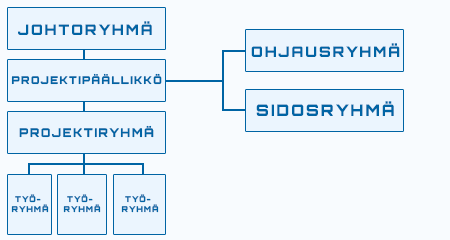
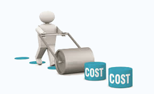
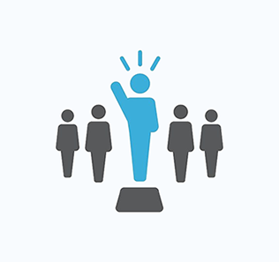
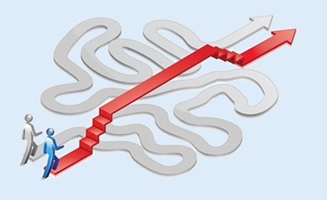

Loading...
Miksi ohjekirja?
Tämä ohjekirjanen on osa Haaga-Helia ammattikorkeakoulun Projektijohtaminen (US8LH102-3001) kurssia. Ohjekirjasen tavoitteena on tuoda ytimekkäästi ilmi projektijohtamisen kannalta tärkeitä asioita. Valitsimme suorittaa kurssin parityönä ja osalliset ovat Nico Tukiainen & Antti Turpeinen.
Sanaa "projekti" käytetään nykyään ehkä vähän liikaakin, sillä lähes kaikki asiat nimetään projekteiksi. Mitä projektilla oikeastaan tarkoitetaan? Se selvitetään lukijalle alempana. Tässä ohjekirjasessa käsitellään projektisuunnitteluun liittyviä asioita yleisellä tasolla ja hahmottamisessa käytetään apuna pieniä esimerkkejä sekä kuvioita.
Projekti =! prosessi
Projekti ei ole sama asia kuin prosessi. Siinä missä prosessi on jatkuvaa toimintaa, projekti puolestaan on kertaluonteinen kokonaisuus, joka tavoitteellinen ja sen kesto sekä resurssit ovat ennalta määriteltyjä. Projektilla on oltava aina selkeä tavoite. Se alkaa ideasta, jolle luodaan toteutussuunnitelma. Jokainen projekti on uniikki, toista tismalleen samanlaista ei tule vastaan. Vastuu projektin tavoitteen saavuttamisesta keskitetään projektipäällikölle. Projektilla on useita vaiheita, joiden toteutumista aikataulutetaan.
Tavoitteen määrittely voi olla haastavaa. Siihen liittyy monia osatekijöitä, muun muassa: puutteelliset esityöt, epärealistiset tavoitteet, rajaaminen epäonnistuu. Projektissa tavoitteena on aina uusi ja erityinen työtulos kun tavanomainen työtoiminta tuottaa toistuvasti samaa tulosta. Projekti myös lakkautetaan, mikäli määriteltyä tavoitetta ei saavuteta.
Projektilla on aina päämäärä, odotukset ja vaatimukset. Näiden saavuttaminen on projektinhallinnan keskeinen haaste. Tästä syystä kaikille projekteille ominaista on tavoitteellisuus.
Sidosryhmät ovat projektin organisaatioon, toimintaan tai tuotteeseen välittömästi tai välillisesti liittyvät tahot. Välittömiä sidosryhmiä ovat esimerkiksi asiakkaat, toimittajat ja alihankkijat, pääorganisaatio (kenelle projektia tehdään) sekä projektihenkilöstö. Välillisiä sidosryhmiä ovat esimerkiksi yhteiskunta ja yleisö.
Projektiorganisaatio on vastuussa siitä, että projekti viedään onnistuneesti läpi ja he vastaavat sen tuotoksesta perusorganisaatiolle. Projektissa voidaan käyttää hyödyksi perusorganisaation rakenteita, kuten logistiikkatoimintoja ja/tai taloushallintoa, mutta projektiorganisaatiolla on kuitenkin itsenäistä päätäntävaltaa yli perusorganisaatiorajojen. Projektiorganisaation vastuun- ja tehtävänjako on selkeytettävä heti projektin alkaessa.
Riskien hallinta on ensisijaisesti varautumista odottamattomiin tai yllättäviin tilanteisiin. Riskien hallinta on prosessi, jonka avulla uhkaavia vaaroja ennakoidaan, torjutaan sekä niistä aiheutuvia kustannuksia minimoidaan. Riskit luokitellaan niiden vaikutuksen ja todennäköisyyden mukaan, jolloin pyritään arvioimaan niiden suuruusluokka. Kun riskit on priorisoitu, suunnitellaan toimenpiteet, miten toimitaan riskin ilmaantuessa.
Kustannusten seuraamisessa hyödyllistä on ensin tehdä aikataulutus, johon on valmiiksi mietitty tehtävät ja niiden tekemiseen vaadittavat resurssit (koneet, tilat, materiaalit, henkilöstö), jotta saadaan laskettua kullekin projektin vaiheelle tarvittavat kustannuserät. Projektipäällikön kannattaa käyttää budjetin laatimiseen apuna asiantuntijoita, mikäli sellaisia on saatavilla.
Projektipäällikön tulee osata tasapainoilla muutoshallinnassa projektin aikataulun, käytettävissä olevien resurssien ja asiakastyytyväisyyden välillä. Hänen on oltava kartalla kaikista muutoksiin liittyvistä yksityiskohdista. Kaikki muutokset eivät välttämättä edellytä työmäärän lisäämistä, vaan jotkut muutokset voivat päin vastoin pienentää työmäärää; tällöin jäljelle jäävä työmäärä on pystyttävä resursoimaan uudelleen.
Viestintäsuunnitelman tekee projektipäällikkö. Se on osa projektisuunnitelmaa, mutta sen tarkempi kuvaus tehdään usein erillisenä viestintäsuunnitelmana. Projektin eri vaiheissa viestinnän painotus vaihtelee. Alussa painopiste on siinä, että saadaan tavoitteet selkeiksi kaikille. Projektin aikana viestintä keskittyy projektitilanteen, muutosten tai ajankohtaisten asioiden tiedottamiseen. Tässä vaiheessa on monia liikkuvia osia, joten budjetin seuranta, henkilöstön motivointi ja verkoston ajan tasalla pitäminen kuuluvat myös tähän osioon. Projektin loppupäässä viestintä tiedottaa ryhmälle loppuraportin, uutisoi projektin päättymisen organisaatiossa ja siihen liittyneet tapahtumat kiitoksineen.
Projektin toteuttamiseksi parhaalla mahdollisella tavalla tarvitaan monien vaiheiden suorittamista - suunnittelua, tiimin valintaa, ajanhallintaa, johtamista, digityökalujen käyttöönottoa jne.
Kirjallisuus käsittelee ositusta jakamalla projektin erilaisiin osiin, kuten: Esiselvitys, valmisteluvaihe, rakentamisvaihe ja päättämisvaihe. Näihin kaikkiin osiin liittyy omia erityispiirteitä, joita hallitsemalla varmistetaan projektin onnistunut lopputulos. Tyypillisesti projektit ovat suhteellisen kalliita ja on pääorganisaation etujen mukaista seurata projektin etenemistä tarkasti.
Projektin osittamisella tarkoitetaan projektin jakamista selkeisiin osakokonaisuuksiin ja niitä vastaaviin toteutuskokonaisuuksiin (osaprojekteihin,
vaiheisiin, tehtäväkokonaisuuksiin ja tehtäviin). Projektin vaiheet etenevät kohti tuotteen valmistumista ja vaiheesta toiseen siirrytään hieman limittäin kuten alla olevassa kuviossa on kuvattu:
Projektinhallintaan liittyviä käsitteitä
Allokointi tarkoittaa käytettävissä olevien resurssien työnjakoa tehokkaalla ja taloudellisella tavalla. Vastaava suomenkielinen termi on esimerkiksi jyvitys.
GANTT-kaavio on pylväsdiagrammin ja kalenterin yhdistelmä, joka esittää visuaalisesti jokaisen tehtävän suorittamiseen suunnitellun ajan. Sen on kehittänyt amerikkalainen insinööri ja konsultti Henry Gantt 1910-luvulla. GANTT-kaaviossa vaaka-akselina on aina aikajana. Hankkeesta riippuen aikajana tehdään joko kuukausi-, viikko- tai päivätasoisena. Työvaiheet sijoitetaan allekkain kaavion vasempaan laitaan. Sen jälkeen aika-akselille piirretään palkki kuvaamaan jokaista työvaihetta. Kaavioon sijoitettujen janojen avulla on helppo hahmottaa työvaiheiden toteutusjärjestys sekä tehtävien keskinäiset riippuvuudet.

Yllä Excelillä tehty simppeli esimerkkikuva GANTT-kaaviosta
Projektin ei tarvitse olla edes erityisen suuri ja monimutkainen, jotta siihen kuuluvat tehtävät muodostavat jo melkoisen monimutkaisen verkon toisistaan riippuvia osasia. Kriittisen polun menetelmän tarkoituksena on yksinkertaistaa koko tehtäväpaketti löytämällä kriittiset tehtävät, joiden hallinnointiin projektitiimin kannattaa ensisijaisesti keskittyä. Jos kriittisen polun tehtävistä myöhästytään, se johtaa heti koko projektin myöhästymiseen. Kriittisen polun etuna on se, että projektipäällikön on helppo seurata, mitä tällä hetkellä pitäisi tapahtua ja missä oikeasti mennään. Toisaalta se ei huomioi tarkasti resurssien saatavuutta, joten se saattaa tuottaa liiankin optimistisen suunnitelman.
Miten valita itselle sopivin projektinhallintamenetelmä?
Tietyt kriteerit auttavat haarukoimaan, mitkä projektinhallintamenetelmät soveltuvat oman projektisi piirteisiin parhaiten. Näitä kriteereitä ovat esimerkiksi:
Agile tarjoaa vaihtoehdon perinteiselle projektinhallinnalle. Se viittaa iteratiiviseen projektinhallintaprosessiin, jossa työ jaetaan pieniin toistuviin jaksoihin ja toteutetaan ennalta sovittujen vaiheiden kautta. Tavoitteena on tarjota projektitiimille hyvät työkalut vastata muutoksiin ja suunnitelmiin liittyvään epävarmuuteen. Kun työ suoritetaan pienissä osissa ja toistuvalla työmallilla, jatkuvan palautteen sekä projektin suunnan tarkastelu ja rakennettu sisälle systeemiin.
Agile ei varsinaisesti ole tarkasti määritelty projektinhallintasysteemi, vaan oikeastaan enemmänkin idea hyvistä ohjenuorista ketterään projektien hallintaan. Agilen vahvuus piilee sen joustavuudessa.

Scrum ja Kanban ovat esimerkkejä projektinhallintasysteemeistä, jotka vievät Agilen ajatuksia konkreettisemmalle tasolle ja tarjoavat selkeät neuvot ketterään päivittäiseen työskentelyyn.
Scrum on viitekehys projektihallintaan, jota käytetään yleisesti ketterässä ohjelmistokehityksessä. Sitä voidaan kuitenkin soveltaa myös yleisesti projektinhallinnassa. Scrumin työskentelymalli on iteratiivista ja inkrementaalista (toistavaa ja lisäävää), jotta tulevaisuuden ennustettavuutta voidaan optimoida ja riskejä kontrolloida paremmin. Tavoitteena olevaa tuotetta kehitetään pikkuhiljaa valmiimmaksi useiden kehitysjaksojen aikana, joita kutsutaan sprinteiksi. Yksi sprintti on noin 1-4 viikon mittainen aikaraja, jonka sisällä tuotetaan aina uudempi tuoteversio.

Yllä simppeli esimerkkikuva Scrumin iteratiivisesta ja inkrementaalisesta työskentelymallista
PRINCE 2 on yleispätevä niin sanottu "Best practice -metodi", joka on kehittynyt projektijohtamisen standardiksi. Metodi antaa vain suuntaviivoja, jolloin se tulee räätälöidä jokaiseen projektiin erikseen. Koska PRINCE2 on geneerinen ja perustuu todistettuihin periaatteisiin, organisaatiot voivat helposti ottaa metodin käyttöön ja se parantaa organisaatioiden mahdollisuuksia hallita projekteja.
PRINCE2 käsittelee projektinhallintaa seitsämän eri periaatteen, teeman ja prosessin kautta, jotka ovat:
Periaatteet
RACI-matriisi on erinomainen työkalu vastuualueiden ja tehtävien jakamiseen. Sen avulla voidaan näppärästi määritellä kunkin toimijan rooli projektin eri osa-alueilla. Matriisin nimen mukaisesti henkilön rooli voi olla:
Yllä esimerkki RACI-matriisista kurssin tehtäväämme liittyen